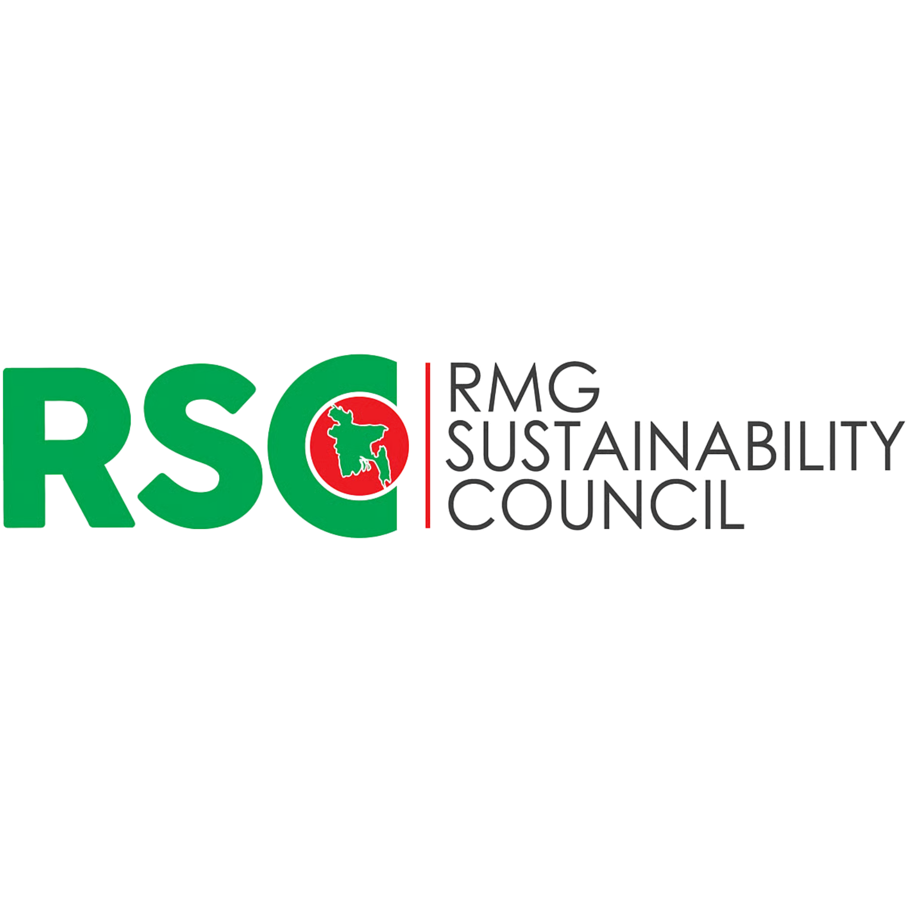
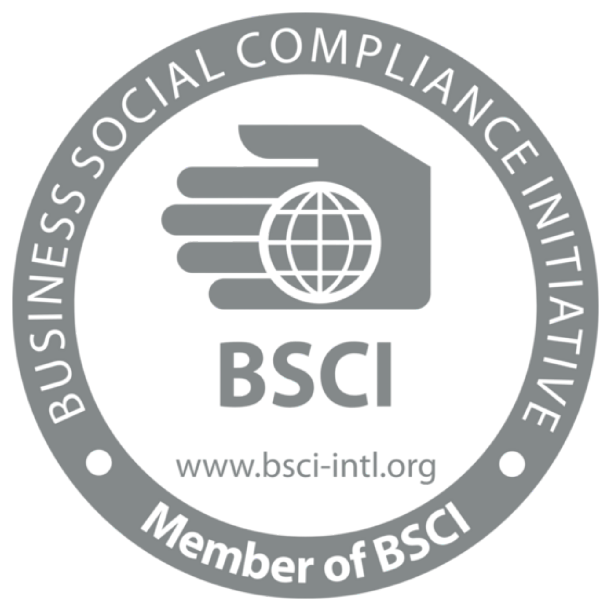

CERTIFICATIONS THAT DEFINE US
GOTS Standard
The Global Organic Textile Standard verifies organic raw cotton paths from harvesting to spinning, knitting, and finished sewing. Ensuring zero toxic pesticides, GMO seeds, or harmful colorants exist in our fabrics.
OEKO-TEX Standard 100
Verifying that all parts of the garment — including buttons, zippers, linings, sewing threads, and raw fabrics — have been tested for over 100 toxic chemicals, allergens, and skin-sensitizing carcinogens.

STRUCTURAL LABOR SAFETYRSC (Accord successor)
TØJ factories are fully aligned with the RMG Sustainability Council (RSC) codes. This successor to the original Bangladesh Accord enforces strict electrical infrastructure safety and structural engineering controls.

ETHICAL SOCIAL ACCREDITATIONBSCI & WRAP Codes
Amfori Business Social Compliance Initiative (BSCI) and Worldwide Responsible Accredited Production (WRAP) verify fair wages, zero child labor, safe standard hours, overtime bonuses, and freedom of collective union rights.
RECYCLE • REUSE • REBORN

Post-Industrial Clipping
Pre-consumer raw cutting clippings from our Dhaka factories are gathered, sorted by color shades, shredded into pure recycled fiber state & avoiding dye chemicals.
Regenerated Yarn Spinning
Recycled cotton fibers are blended with organic raw virgin GOTS cotton (approx 30/70 blend) to maintain structural yarn length, and spun into durable regenerated yarn.
Eco Garment Assembly
Spun regenerated yarn is knitted, dyed using non-toxic class-I chemicals, cut, and assembled into premium circular knitwear collections for international retailers.